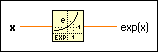

Exponential Function
Owning Palette: Exponential Functions
Requires: Base Development System
Computes the value of e raised to the x power, or the exponential of x.
 | Note For very small values of x, the Exponential (Arg) -1 function is more accurate than using this function then subtracting 1 from the output. |
The connector pane displays the default data types for this polymorphic function.

 Add to the block diagram Add to the block diagram |
 Find on the palette Find on the palette |